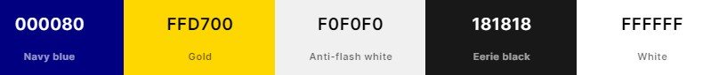

1 - Site Name
Name: "Ogden Valley Chamber of Commerce"
Justification: This name clearly indicates the geographic focus and purpose of the site, promoting business interests in the Ogden Valley.
2 - Site Purpose
Purpose 1: "To facilitate business networking and growth among local enterprises in the Ogden Valley."
Purpose 2: "To serve as a central hub for tourists and new residents seeking information about services, events, and opportunities in the area."
3 - Scenarios
- "What are the upcoming networking events hosted by the Chamber?"
- "How can I get in touch with the Chamber’s board of directors?"
- "What are the latest demographic and economic growth statistics for Ogden Valley?"
4 - Color Schema
Primary Color (Navy Blue #000080): Used for headers, important links, and other key elements to denote professionalism and trust. This deep shade of blue establishes a strong presence and anchors the site’s design.
Accent Color (Gold #FFD700): Used for buttons, highlighted text, and active elements to draw attention and create a visually appealing contrast. Gold adds a touch of luxury and importance to interactive components.
Background Color (Anti-flash White #F0F0F0): Applied to most of the website’s background, this color provides a clean and unobtrusive backdrop that enhances readability and reduces visual strain.
Text Color (Eerie Black #181818): Used for the main body text, this near-black shade ensures excellent readability against lighter backgrounds and contributes to a minimalist and elegant aesthetic.
Secondary Text Color (White #FFFFFF): Used for text over areas with the primary Navy Blue background or other dark sections. This color choice ensures high contrast and readability in varied visual contexts.
5 - Typography
Primary Font: 'Lato' for body text due to its readability and clean appearance.
Secondary Font: 'Montserrat' for headings to add visual interest and hierarchy.
6 - Wireframes
Simple diagrams that plan out the page and site layouts to be used including headings, navigation, sections, and footers, etc. (Include diagrams or descriptions here).